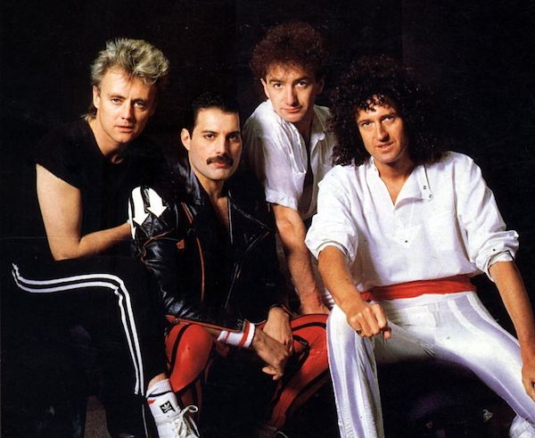

Few bands embodied the fearless creativity and attitude of 1970s rock like Queen. Embracing the exaggerated pomp of prog rock and heavy metal and the quaintness of vaudevillian music hall in equal measure, the British quartet colored their complex arrangements with camp and bombast, creating a huge, mock- operatic sound layered with guitars and overdubbed vocals. For years, their albums boasted the motto "no synthesizers were used on this record," signaling their allegiance with post- Led Zeppelin hard rock bands. But balancing this seriousness, vocalist Freddie Mercury brought an extravagant sense of fun to Queen, pushing them toward kitschy humor and pseudo-classical arrangements as epitomized in their best-known song, "Bohemian Rhapsody." Blessed with an extensive range and perfect pitch, Mercury was one of the most charismatic and technically gifted rock singers of his generation, his larger-than-life reputation bolstered by a wry, outspoken sense of humor and an array of era-defining stage costumes. Through his legendary theatrical performances, Queen became one of the most popular bands in the world in the mid-70s, topping the charts in England and regularly cracking the Billboard 200 Top Ten with albums like 1975's A Night at the Opera, 1976's A Day at the Races, and 1977's News of the World. They also shifted stylistic gears seemingly at will, dipping into funk and disco; a trait that helped make sons like 1980's bass-driven "Another One Bites the Dust" into worldwide hits. The band retained a fanatical following into the '80s, earning three number one albums in the U.K X with 1980's The Game, 1986's A Kind of Magic, and 1989's The Miracle. They garnered yet more pop culture fame along the way, gleefully supplying the soundtracks to sci-fi action films like Flash Gordon and The Highlander. Though Mercury 's death from complications due to AIDS in 1991 brought Queen's initial reign to a close (his final album being the posthumously released Made in Heaven), their influence continued to be heard in the generations of artists and bands that followed, from Metallica and The Smashingn Pumpkins , to George Michael , Prince , and Lady Gaga . A year after Mercury 's death, "Bohemian Rhapsody" returned to the charts after it was prominently featured in the hit comedy film Wayne's World. Queen eventually returned to the stage, touring with Bad Company singer Paul Rodgers in the 2000s and later paired with former American Idol runner-up Adam Lambert beginning in 2011. Along with continued tours and merchandise, they have remained a vital presence in music, and in 2018 were subject of the Oscar-winning biopic Bohemian Rhapsody,
The origins of Queen lay in the hard rock psychedelic group Smile, which guitarist Brian May and drummer Roger Taylor joined in 1967. Following the departure of Smile's lead vocalist, Tim Staffell , in 1971, May and Taylor formed a group with Freddie Mercury, the former lead singer for Wreckage. Within a few months, bassist John Deacon joined them, and they began rehearsing. Over the next two years, as all four members completed college, they simply rehearsed, playing just a handful of gigs. By 1973, they had begun to concentrate on their career, releasing their debut album, Queen, that year and setting out on their first tour. Produced by the band, along with Roy Thomas Baker and John Anthony, Queen was more or less a straight metal album and drew favorable comparisons to Led Zeppelin.